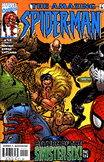

II
|
|
Name: Alyosha Kravinoff ID: No dual Identity Relatives: Sergei Kravinoff, Kraven I, Father (Deceased)...Vladimir Kravinoff, Grim Hunter, Brother (Deceased Affiliates: Member Of The Sinister Six. Enemies: Spider-Man, Black Panther, Venom. Powers: Similar powers to his Father's: Superhuman Strength , speed of up to 60 miles per hour, agility, stamina. Also skilled at taming wild beasts, and using exotic animal fighting techniques. Origin: Alyosha is the son of the great Sergei Kravinoff, the original Kraven the Hunter and has followed in his Father's footsteps well...So far! |
|
1st App.: Spectacular Spider-Man #243
February 1997 Spider-Man Appearances: Amazing Spider-Man V2 #12...Spectacular Spider-Man #243-245, 246 & 248-253...Spider-Man V2 #12 & 17...Tangled Web #13 Other Appearances: Fantastic Four V3 #9...Black Panther V3 #6 & 7 |
|
Alyosha soon made a big impact on Spider-Man's life after being introduced in Spectacular Spider-Man #246 and appeared at a tumultuous time as Norman Osborn came in to power at the Daily Bugle...Kraven II appeared in 6 straight issues of that title with issues #248-253...He "strayed" away from "home" a little by appearing in Black Panther's title for a couple issues. |
|
|  | As did his Father Sergei, Alyosha joined up with the Sinister Six in an effort to seek revenge on Spider-Man, but it was a strange team chemistry with the addition of Venom who later sought out to kill the other members...A meeting with Kraven was featured in Amazing Spider-Man V2 #17...There is hardly a difference between Alyosha and his Father. |
Spider-Man Fear
Rating: 5
(out of 10)